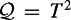

|
| |||||||||||||
|
|
||
Equipped with our understanding of configurations and of configuration spaces, we can define the path-planning problem to be that of determining a continuous mapping, , such that no configuration in the path causes a collision between the robot and an obstacle. It is useful to define explicitly the set of configurations for which such a collision occurs. We define a configuration space obstacle to be the set of configurations at which the robot intersects an obstacle WOi in the workspace, i.e.,
The free space or free configuration space is the set of configurations at which the robot does not intersect any obstacle, i.e.,
With this notation, we define a free path to be a continuous mapping , and a semifree path to be a continuous mapping , in which  denotes the closure of . A free path does not allow contact between the robot and obstacles, while a semifree path allows the robot to contact the boundary of an obstacle. We assume that is open unless otherwise noted.
denotes the closure of . A free path does not allow contact between the robot and obstacles, while a semifree path allows the robot to contact the boundary of an obstacle. We assume that is open unless otherwise noted.
We now examine how obstacles in the workspace can be mapped into the configuration space for the robots that we discussed above.
Consider the circular mobile robot in an environment with a single polygonal obstacle in the workspace, as shown in figure 3.4. In figure 3.4(b), we slide the robot around the obstacle to find the constraints the obstacle places on the configuration of the robot, i.e., the possible locations of the robot's reference point. We have chosen to use the center of the robot, but could easily choose another point. Figure 3.4(c) shows the resulting obstacle in the configuration space. Motion planning for the circular robot in figure 3.4(a) is now equivalent to motion planning for a point in the configuration space, as shown in figure 3.4(c).
Figure 3.5 shows three mobile robots of different radii in the same environment. In each case, the robot is trying to find a path from one configuration to another. To transform the workspace obstacles into configuration obstacles, we "grow" the polygon outward and the walls inward. The problem is now to find a path for the point robot in the configuration space. We see that the growing process has disconnected the free configuration space for the largest robot, showing that there is no solution for this robot.
Although the example in figure 3.5 is quite simple, the main point is that it is easier to think about points moving around than bodies with volume. Keep in mind that although both the workspace and the configuration space for this system can be represented by , and the obstacles appear to simply "grow" in this example, the configuration space and workspace are different spaces, and the transformation from workspace obstacles to configuration space obstacles is not always so simple.
For example, appendix F discusses how to generate configuration space obstacles for a polygon that translates and rotates among polygonal obstacles in the plane. The two-joint arm example is examined next.
For the case of the circular mobile robot in a world populated with polygonal obstacles, it is easy to compute configuration space obstacles. When the robot is even slightly more complex, it becomes much more difficult to do so. For this reason, grid-based representations of the configuration space are sometimes used. Consider the case of the two-joint planar arm, for which . We can define a grid on the surface of the torus, and for each point on this grid we can perform a fairly simple test to see if the corresponding configuration causes a collision between the arm and any obstacle in the workspace. If we let each grid point be represented by a pixel, we can visualize the configuration space obstacle by "coloring" pixels appropriately. This method was used to obtain figures 3.6, 3.7, and 3.8.[2] In each of the figures, the image on the left depicts a two-joint arm in a planar workspace, while the image on the right depicts the configuration space. In each case, the arm on the left is depicted in several configurations, and these are indicated in the configuration spaces on the right.
While pictures such as those in figures 3.6, 3.7, and 3.8 are useful for visualizing configuration space obstacles, they are not sufficient for planning collision-free motions. The reason for this is that the grid only encodes collision information for the discrete set of points lying on the grid. A path includes not only grid points, but also the points on the curves that connect the grid points. One possible remedy for this problem is to "thicken" the robot when we test it at a grid point, so that if the thickened robot is collision-free, then paths to adjacent grid points are also collision-free.[3] We could also choose to ignore this problem by choosing a grid resolution that is "high enough."
[2]These figures were obtained using the applet at http://ford.ieor.berkeley.edu/cspace/
[3]This approach is called conservative, as a motion planner using this approach will never find an incorrect solution, but it might miss solutions when they exist. As a result, the planner can only be resolution complete, not complete.
|
|
||
|